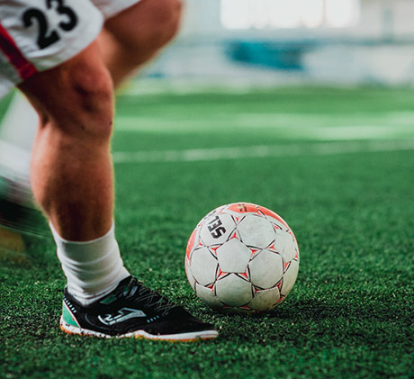
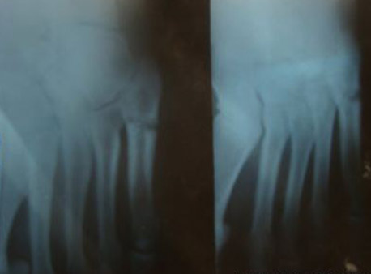

Остеопатия для футболистов. Лечение и профилактика стрессовых переломов
Это связано с частыми столкновениями игроков на высокой скорости, с ротационными движениями голени при фиксированной стопе, с тренировками на жёстких ( искусственных) покрытиях, высоким эмоциональным накалом игры.
Травмы у футболистов могут быть вызваны резким, превышающим физиологический предел прочности тканей воздействием, и тогда происходят разрывы связок, переломы, лечение которых проводится в специализированных стационарах, часто с применением оперативных методов.
Но, часто травмы у испытывающих колоссальные нагрузки спортсменов происходят как бы исподволь, постепенно приводя к невозможности дальнейших тренировок и, тем более, игр.

К таким патологиям относятся так называемые «стрессовые переломы». Они возникают при физических перегрузках однотипного характера, когда в костной ткани под воздействием чрезмерной и постоянной нагрузки происходит ремоделирование костных балок. Другими словами, кость на микроуровне получает переломы, которые затрагивают поначалу лишь немного структурно-функциональных единиц кости, на этом этапе возможно самозаживление, путём образования костной мозоли.
Но чрезмерные нагрузки продолжаются, и на том же месте возникают новые микропереломы, и опять появляются соединительнотканные мостики для заживления этой зоны. Таким образом, формируются зоны патологической перестройки костной ткани, которые, при продолжающихся перегрузках приводят к реальному перелому.
Вот почему такие переломы называют «стрессовыми» - ведь происходят они в условиях стрессорного воздействия на кость ударных нагрузок. Статистика указывает на большую частоту данных травм: они составляют около 10% всех спортивных повреждений, причем 95% их происходят в костях голени и стопы. У футболистов при резкой остановке после быстрого бега с поворотом на наружном отделе стопы наиболее нагружаемой является 5-я плюсневая кость.